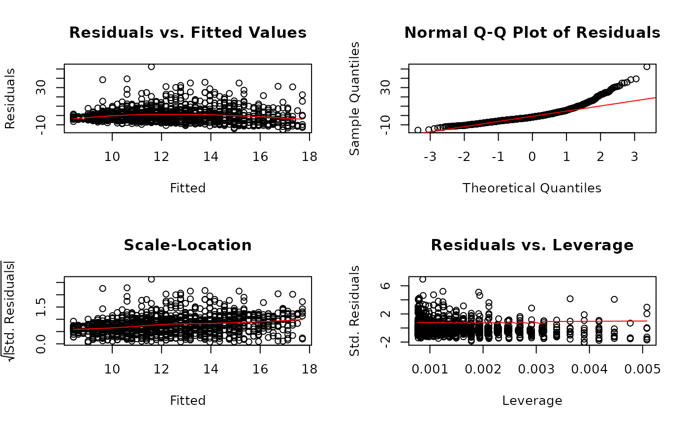

Linear Regression
linreg( X, y, varnamesX = NULL, varnamey = NULL, qr = TRUE, sehatbetahattype = "unbiased", sehatslopesprimetype = "textbook", adjust = FALSE, plot = TRUE, print = TRUE )
Arguments
| X |
|
|---|---|
| y | Numeric vector of length |
| varnamesX | Optional. Character vector of length |
| varnamey | Optional. Character string.
Variable name for vector |
| qr | Logical.
If |
| sehatbetahattype | Character string.
Standard errors for regression coefficients hypothesis test.
Options are |
| sehatslopesprimetype | Character string.
Standard errors for standardized regression slopes hypothesis test.
Options are |
| adjust | Logical.
If |
| plot | Logical. Display plots. |
Logical. Display summary output. |
Examples
# Simple regression------------------------------------------------ X <- jeksterslabRdatarepo::wages.matrix[["X"]] X <- X[, c(1, ncol(X))] y <- jeksterslabRdatarepo::wages.matrix[["y"]] linreg(X = X, y = y)#> Warning: NaNs produced#> #> Model Assessment: #> Value #> RSS 73673.13 #> MSE 57.16 #> RMSE 7.56 #> R-squared 0.08 #> Adj. R-squared 0.08 #> #> ANOVA Table: #> df SS MS F p #> Model 1 6636.695 6636.69500 115.9368 6.019852e-26 #> Error 1287 73673.129 57.24408 NA NA #> Total 1288 80309.824 NA NA NA #> #> Coefficients: #> coef se t p #> Intercept 4.874251 0.72698105 6.704784 3.011026e-11 #> age 0.197486 0.01834111 10.767395 6.019852e-26 #> #> Standardized Coefficients: #> Textbook standard errors are used. #> coef se t p #> age 0.2874694 0.02669814 10.76739 6.019852e-26 #> #> Confidence Intervals - Regression Coefficients: #> ci_0.05 ci_0.5 ci_2.5 ci_97.5 ci_99.5 ci_99.95 #> Intercept 2.4765930 2.9988909 3.4480531 6.3004490 6.7496112 7.2719091 #> age 0.1369951 0.1501723 0.1615042 0.2334678 0.2447997 0.2579769 #> #> Confidence Intervals - Standardized Slopes: #> ci_0.05 ci_0.5 ci_2.5 ci_97.5 ci_99.5 ci_99.95 #> age 0.1994162 0.2185974 0.2350927 0.339846 0.3563414 0.3755226 #> #> Means and Standard Deviations: #> Mean SD #> wages 12.36585 7.89635 #> age 37.93483 11.49428# Multiple regression---------------------------------------------- X <- jeksterslabRdatarepo::wages.matrix[["X"]] # age is removed X <- X[, -ncol(X)] linreg(X = X, y = y)#> #> Model Assessment: #> Value #> RSS 54342.54 #> MSE 42.16 #> RMSE 6.49 #> R-squared 0.32 #> Adj. R-squared 0.32 #> #> ANOVA Table: #> df SS MS F p #> Model 5 25967.28 5193.45611 122.6149 3.453144e-106 #> Error 1283 54342.54 42.35584 NA NA #> Total 1288 80309.82 NA NA NA #> #> Coefficients: #> coef se t p #> Intercept -7.1833382 1.01578786 -7.071691 2.508276e-12 #> gender -3.0748755 0.36461621 -8.433184 8.939416e-17 #> race -1.5653133 0.50918754 -3.074139 2.155664e-03 #> union 1.0959758 0.50607809 2.165626 3.052356e-02 #> education 1.3703010 0.06590421 20.792312 5.507605e-83 #> experience 0.1666065 0.01604756 10.382050 2.659960e-24 #> #> Standardized Coefficients: #> Textbook standard errors are used. #> coef se t p #> gender -0.19477502 0.02309626 -8.433184 8.939416e-17 #> race -0.07135673 0.02321194 -3.074139 2.155664e-03 #> union 0.05077872 0.02344760 2.165626 3.052356e-02 #> education 0.48829962 0.02348462 20.792312 5.507605e-83 #> experience 0.24607631 0.02370209 10.382050 2.659960e-24 #> #> Confidence Intervals - Regression Coefficients: #> ci_0.05 ci_0.5 ci_2.5 ci_97.5 ci_99.5 ci_99.95 #> Intercept -10.5335348 -9.8037324 -9.1761258 -5.1905507 -4.5629441 -3.8331417 #> gender -4.2774257 -4.0154638 -3.7901849 -2.3595660 -2.1342872 -1.8723252 #> race -3.2446781 -2.8788475 -2.5642449 -0.5663817 -0.2517792 0.1140514 #> union -0.5731336 -0.2095371 0.1031443 2.0888072 2.4014886 2.7650852 #> education 1.1529406 1.2002901 1.2410091 1.4995928 1.5403119 1.5876614 #> experience 0.1136797 0.1252092 0.1351242 0.1980889 0.2080039 0.2195334 #> #> Confidence Intervals - Standardized Slopes: #> ci_0.05 ci_0.5 ci_2.5 ci_97.5 ci_99.5 #> gender -0.27094940 -0.254355676 -0.24008560 -0.14946443 -0.13519436 #> race -0.14791263 -0.131235792 -0.11689425 -0.02581921 -0.01147766 #> union -0.02655441 -0.009708265 0.00477888 0.09677855 0.11126570 #> education 0.41084437 0.427717121 0.44222714 0.53437211 0.54888213 #> experience 0.16790381 0.184932806 0.19957719 0.29257542 0.30721981 #> ci_99.95 #> gender -0.118600632 #> race 0.005199175 #> union 0.128111846 #> education 0.565754879 #> experience 0.324248802 #> #> Means and Standard Deviations: #> Mean SD #> wages 12.3658495 7.8963503 #> gender 0.4972847 0.5001867 #> race 0.1528317 0.3599648 #> union 0.1590380 0.3658535 #> education 13.1450737 2.8138234 #> experience 18.7897595 11.6628366# Multiple regression---------------------------------------------- # delta standard errors for standardized coefficients linreg(X = X, y = y, sehatslopesprimetype = "delta")#> #> Model Assessment: #> Value #> RSS 54342.54 #> MSE 42.16 #> RMSE 6.49 #> R-squared 0.32 #> Adj. R-squared 0.32 #> #> ANOVA Table: #> df SS MS F p #> Model 5 25967.28 5193.45611 122.6149 3.453144e-106 #> Error 1283 54342.54 42.35584 NA NA #> Total 1288 80309.82 NA NA NA #> #> Coefficients: #> coef se t p #> Intercept -7.1833382 1.01578786 -7.071691 2.508276e-12 #> gender -3.0748755 0.36461621 -8.433184 8.939416e-17 #> race -1.5653133 0.50918754 -3.074139 2.155664e-03 #> union 1.0959758 0.50607809 2.165626 3.052356e-02 #> education 1.3703010 0.06590421 20.792312 5.507605e-83 #> experience 0.1666065 0.01604756 10.382050 2.659960e-24 #> #> Standardized Coefficients: #> Yuan and Chan 2011 standard errors are used. #> coef se t p #> gender -0.19477502 0.02282716 -8.532598 3.979462e-17 #> race -0.07135673 0.02317122 -3.079541 2.117236e-03 #> union 0.05077872 0.02342286 2.167913 3.034867e-02 #> education 0.48829962 0.02113537 23.103429 5.007598e-99 #> experience 0.24607631 0.02330714 10.557981 4.800438e-25 #> #> Confidence Intervals - Regression Coefficients: #> ci_0.05 ci_0.5 ci_2.5 ci_97.5 ci_99.5 ci_99.95 #> Intercept -10.5335348 -9.8037324 -9.1761258 -5.1905507 -4.5629441 -3.8331417 #> gender -4.2774257 -4.0154638 -3.7901849 -2.3595660 -2.1342872 -1.8723252 #> race -3.2446781 -2.8788475 -2.5642449 -0.5663817 -0.2517792 0.1140514 #> union -0.5731336 -0.2095371 0.1031443 2.0888072 2.4014886 2.7650852 #> education 1.1529406 1.2002901 1.2410091 1.4995928 1.5403119 1.5876614 #> experience 0.1136797 0.1252092 0.1351242 0.1980889 0.2080039 0.2195334 #> #> Confidence Intervals - Standardized Slopes: #> ci_0.05 ci_0.5 ci_2.5 ci_97.5 ci_99.5 #> gender -0.27006189 -0.253661495 -0.239557685 -0.14999235 -0.1358885 #> race -0.14777833 -0.131130752 -0.116814367 -0.02589909 -0.0115827 #> union -0.02647282 -0.009644448 0.004827412 0.09673002 0.1112019 #> education 0.41859249 0.433777402 0.446835936 0.52976331 0.5428218 #> experience 0.16920643 0.185951662 0.200352024 0.29180059 0.3062010 #> ci_99.95 #> gender -0.11948815 #> race 0.00506488 #> union 0.12803026 #> education 0.55800676 #> experience 0.32294619 #> #> Means and Standard Deviations: #> Mean SD #> wages 12.3658495 7.8963503 #> gender 0.4972847 0.5001867 #> race 0.1528317 0.3599648 #> union 0.1590380 0.3658535 #> education 13.1450737 2.8138234 #> experience 18.7897595 11.6628366